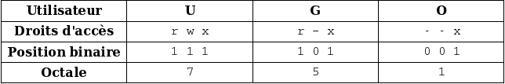

Vous avez sûrement entendu parler des chmod ! Cette commande qui pose souvent problème en PHP. Eh bien pour commencer, sachez que c'est de la faute de Linux.
Pour faire simple, je dirai seulement que Linux est un système multi-utilisateurs et donc qu'il ne faut pas que tous les utilisateurs puissent lire les fichiers de tous, sinon, l'intérêt est limité.
Les chmod définissent les droits d'un utilisateur sur un fichier.
Chaque utilisateur appartient au moins à un groupe.
Les fichiers ont donc des permissions visant 3 types d'utilisateurs :
celle concernant le propriétaire du fichier
celle concernant le groupe du propriétaire du fichier
celle concernant les autres utilisateurs.
Pour chaque type de personnes visées, il y a trois types de droits :
r : droit de lecture
w : droit d'écriture
x : droit d'exécution.
A ces types de droits on associe un bit, prenant :
la valeur 0 si la personne n'a pas ce droit
la valeur 1 si la personne a ce droit.
On a donc des triplets du genre 111 (par exemple) pour chacun des types d'utilisateurs.
Ce qui nous donne 111 100 101 (encore par exemple).
Dans ce cas,
le propriétaire a les droits 111, c'est-à-dire lecture, écriture et exécution
le groupe a les droits 100, c'est-à-dire le droit de lecture
les autres ont les droits 101, c'est-à-dire les droits de lecture et d'exécution.
Le fait d'avoir un nombre contenant des 0 et des 1 est ce qu'on appelle un nombre binaire.
Nous avons pour habitude de compter en décimal avec des chiffres de 0 à 9.
Mais on peut compter aussi en octal (chiffres de 0 à 7), ou en hexadécimal (de 0 à F, A = 10; B = 11; C = 12 ...; F = 15).
Or, les nombres binaires vont de 000 à 111, ce qui fait en octal de 0 à 7. Et nous pouvons ainsi donner à chaque type d'utilisateur son droit sous la forme d'un chiffre entre 0 et 7 (0 = aucun droit : 7 = tous les droits).
Maintenant que nous en savons un peu plus sur les droits, nous allons voir comment les appliquer.
On peut appliquer les droits sur un fichier de plusieurs façons :
de manière symbolique
de manière octale.
De manière octale
Si je veux changer tous les droits du fichier ou m'assurer qu'ils sont comme je le veux, c'est la meilleure manière.
Prenons un exemple.
J'ai un script bash que je veux être le seul à pouvoir modifier, mais que les personnes de mon groupe pourront lire. Et que tous pourront exécuter.
Je devrais mettre les droits suivants :

On va donc exécuter la commande suivante :
chmod 751 script.sh
De manière symbolique
Si maintenant, je me rends compte que je ne peux pas modifier un fichier texte, ce que pourtant je voudrais.
Avec la méthode octale, il me faudrait tout décomposer pour seulement supprimer un droit.
Mais il existe la méthode symbolique.
Elle est de type : chmod [ugoa][+-][rwx].
C'est l'une de ces lettres u (propriétaire du fichier), g (groupe), o (les autres), a (tout le monde = u + g + o), suivie de + ou - pour respectivement ajouter ou supprimer les permissions, et la forme symbolique des permissions est de la forme r (read : lecture), w (write : écriture), x (exécution).
Par exemple, pour pouvoir modifier ce fichier texte qui nous appartient :
chmod u+w fich.odt
on peut mettre plusieurs droits symboliques en les séparant par des virgules :
chmod u+rw,g+r,o+r,a-x fich.odt
Dans cet exemple, on ajoute les droits en lecture et en écriture au propriétaire, on ajoute les droits de lecture au groupe, les droits de lecture aux autres, et on enlève les droits d'exécution à tous.
Le chmod permet aussi de donner d'autres droits moins connus.
Le Sticky bits.
Il permet :
lorsqu'on l'applique à un exécutable, de le garder en mémoire lors de sa première exécution
lorsqu'on l'applique à un répertoire, seul le propriétaire du fichier ou le propriétaire du répertoire a le droit d'effacer les fichiers.
On le met ainsi :
chmod u+t fich
Le SUID, le SGID.
Le SUID permet d'avoir accès aux droits du propriétaire à l'intérieur du programme, pour avoir accès aux fichiers de configuration, par exemple. Pour des raisons de sécurité, le SUID ne s'applique qu'aux programmes binaires compilés à l'exception des scripts Perl.
Le SGID permet de déterminer le groupe des fichiers créés dans le répertoire.
On le met ainsi :
chmod u+s prog ou chmod 4755 prog # Pour le SUID
chmod g+s rep/ ou chmod 2755 rep/ # Pour le SGID
Voici donc la fin de cette petite introduction au Chmod.